Section: Home User Management Role Add
Назначение:
Секция Add aпозволяет добавить новую роль в админ панели. Вы должны выбрать функции для будущей роли.
Для добавления роли заполните поля
| Field | Description |
|---|---|
| Name * | Название роли |
| Description * | Назначение роли |
| Gate | Полномочия роли в зависимости от шлюза |
| Merchant | Полномочия роли в зависимости от мерчанта |
| Account | олномочия роли в зависимости от аккаунта |
Пометка | Всегда заполняйте поле помеченное *
Выберите функции для роли, например
| Features | Screenshot |
|---|---|
| Может настраивать аккаунт | 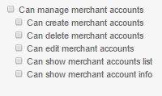 |
| Может просматривать отчеты | 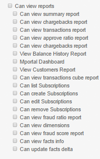 |
| НДС функции | 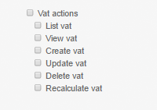 |
Пометка | Вы можете выбрать все роли, просто нажав Full permissions на галочку
После выбора функций нажмите на кнопку 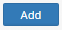
Section: Home User Management Role List
Назначение:
Секция List позволяет найти роль или посмотреть полный список ролей в админ панели.
Для поиска ролей в админ панели выберите фильтры
| Field | Description | Screenshot |
|---|---|---|
| Gate | Поиск по шлюзу | 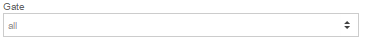 |
| Merchant | Поиск по мерчанту | 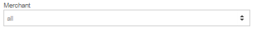 |
| Account | Поиск по аккаунту | 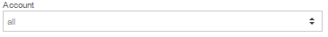 |
| Permissions | Права | 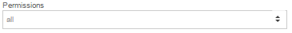 |
| Role Name | Название роли | 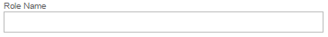 |
| Role Description | Поиск по назначению роли | 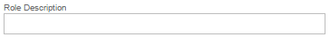 |
После выбора фильтров нажмите кнопку 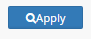
Пример
| Gate Name | Merchant Name | Merchant Account Name | Role Name | Role Description | Permissions | Actions |
|---|---|---|---|---|---|---|
| root | Full privileges | / | ||||
| Live gate | White Label | White Label | /user_management /role_management /user_role_management /gate_management/list /gate_management/show /reports/view_summary /reports/view_chargeback_ratio /reports/view_transactions /reports/view_approve_ratio /merchant_management /merchant_account_management /banks /routing /cascading /mids /shared_token /logs /reports/view_balance_history /reports/view_customers /applications /user_settings /reports/view_dashboard /references /simulation /transactions /mportal /mailer /generate_otp_for_users /reports/view_transactions_cube /reports/subscriptions_list /reports/subscriptions_create /reports/subscriptions_edit /reports/subscriptions_remove /currency_converter /reports/view_fraud_ratio /reports/view_dimensions /frs/modifications /qod |
|||
| Use virtual terminal | Use virtual terminal | /merchant_account_management/list /hpp/terminal |
||||
| Shared tokens manager | Manage shared tokens | /shared_token | ||||
| Account manager | Account manager | /gate_management/list /gate_management/show /reports /merchant_management/list /merchant_management/show /merchant_account_management/list /merchant_account_management/show /banks/list /banks/show /mids/list /mids/show /frs/modifications |
||||
| Live gate | MMS manager (FRS) | MMS manager for FRS system | /reports /merchant_management /merchant_account_management /banks /mids /shared_token /logs /applications /user_settings /references /simulation /transactions /mportal /generate_otp_for_users /currency_rate /currency_converter /vat |
|||
| Project Manager | Project Manager | /gate_management/list /gate_management/show /merchant_management/list /merchant_management/show /merchant_account_management/list /merchant_account_management/show /banks/list /banks/show /mids/list /mids/show |
||||
| Accountant | Accountant | /gate_management/list /gate_management/show /reports /merchant_management/list /merchant_management/show /merchant_account_management/list /merchant_account_management/show /banks/list /banks/show /mids/list /mids/show /frs |
||||
| QA | QA | /reports /logs/transaction_logs /frs/modifications /trace |
Детали:
Для настройки нажмите .
Для удаления нажмите .
Вы можете создать новую роль просто нажав 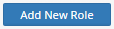